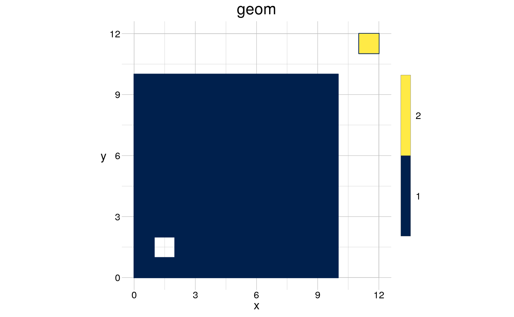
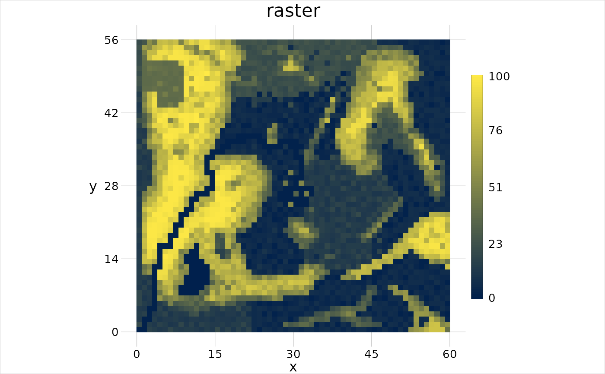
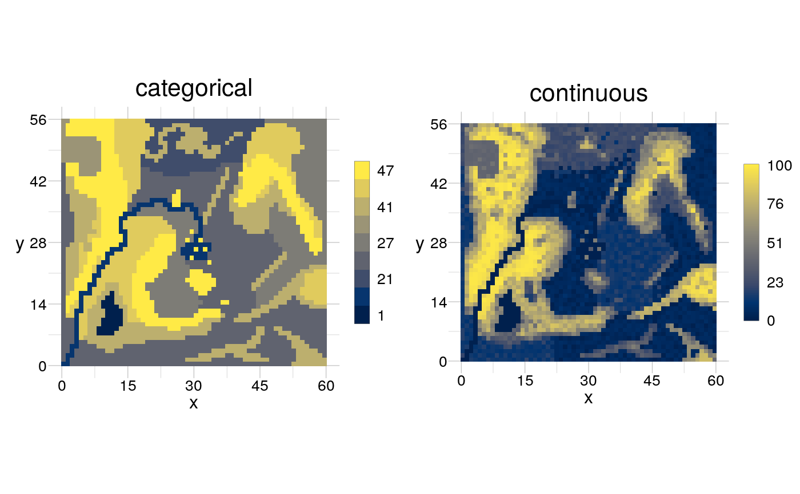

Click into a plot to get the location or identify values
gt_locate(samples = 1, panel = NULL, identify = FALSE, snap = FALSE, raw = FALSE, show = TRUE, ...)
| samples | [ |
|---|---|
| panel | [ |
| identify | [ |
| snap | [ |
| raw | [ |
| show | [ |
| ... | [ |
A tibble of the selected locations and, if identify
= TRUE, the respective values. If show = TRUE the values are also
shown in the plot.
gt_locate(samples = 2)#> # A tibble: 2 x 3 #> id x y #> <int> <dbl> <dbl> #> 1 1 NA NA #> 2 2 NA NAgt_locate(identify = TRUE, snap = TRUE)#> Error in values[1] <- matPos$x: replacement has length zerogt_locate(samples = 4, panel = "categorical", snap = TRUE, identify = TRUE)#> Error in values[1] <- matPos$x: replacement has length zero# }